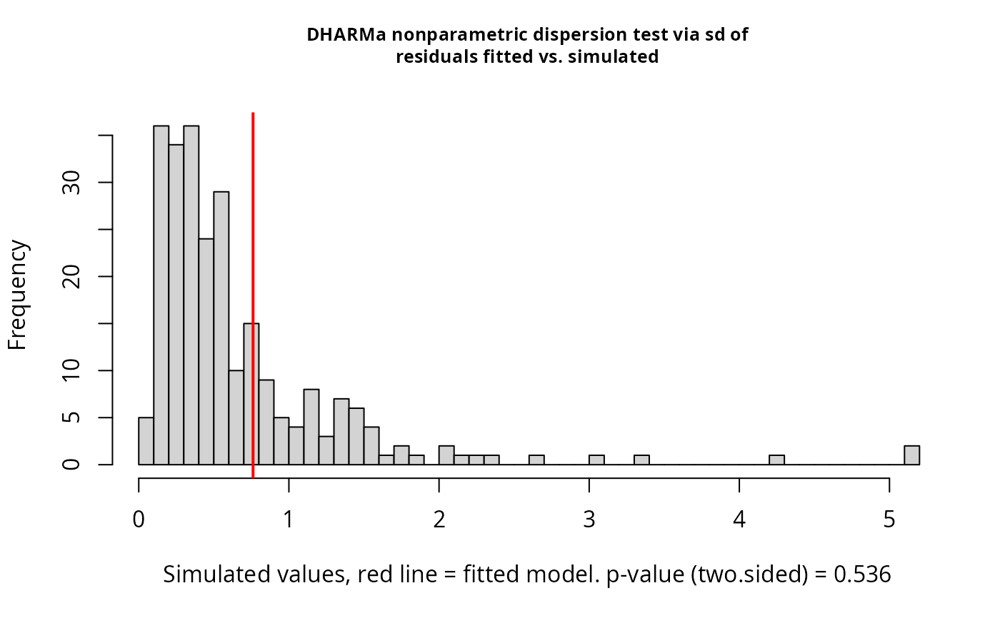

Reproduces the Chapter 11, Section 11.1.2 workflow comparing an ANOVA on counts, an ANOVA on log counts, a Poisson GLM, and a Poisson-normal GLMM with an observation-level random effect.
Details
The Poisson-normal GLMM is $$\log(\lambda_{ij}) = \eta + \tau_i + u_{ij}, \quad u_{ij} \sim N(0, \sigma_U^2).$$
Note
The count and log-count ANOVA outputs reproduce the printed book values. The Poisson-normal GLMM is fitted with lme4; small differences from SAS PROC GLIMMIX are expected because the estimation algorithms differ.
References
Stroup, W. W., Ptukhina, M., and Garai, S. (2024). Generalized Linear Mixed Models: Modern Concepts, Methods and Applications, 2nd ed. CRC Press.
Examples
data(DataSet11.1)
fit_count <- stats::lm(count ~ trt, data = DataSet11.1)
stats::anova(fit_count)
#> Analysis of Variance Table
#>
#> Response: count
#> Df Sum Sq Mean Sq F value Pr(>F)
#> trt 1 260.1 260.10 3.8054 0.08689 .
#> Residuals 8 546.8 68.35
#> ---
#> Signif. codes: 0 ‘***’ 0.001 ‘**’ 0.01 ‘*’ 0.05 ‘.’ 0.1 ‘ ’ 1
DataSet11.1$log_count <- log(DataSet11.1$count)
fit_log <- stats::lm(log_count ~ trt, data = DataSet11.1)
stats::anova(fit_log)
#> Analysis of Variance Table
#>
#> Response: log_count
#> Df Sum Sq Mean Sq F value Pr(>F)
#> trt 1 3.7290 3.7290 7.7798 0.02359 *
#> Residuals 8 3.8346 0.4793
#> ---
#> Signif. codes: 0 ‘***’ 0.001 ‘**’ 0.01 ‘*’ 0.05 ‘.’ 0.1 ‘ ’ 1
emmeans::emmeans(fit_log, specs = ~ trt)
#> trt emmean SE df lower.CL upper.CL
#> 1 1.32 0.31 8 0.602 2.03
#> 2 2.54 0.31 8 1.823 3.25
#>
#> Confidence level used: 0.95
fit_glm <- stats::glm(
count ~ trt,
family = stats::poisson(link = "log"),
data = DataSet11.1
)
emmeans::emmeans(fit_glm, specs = ~ trt, type = "response")
#> trt rate SE df asymp.LCL asymp.UCL
#> 1 4.8 0.98 Inf 3.22 7.16
#> 2 15.0 1.73 Inf 11.96 18.81
#>
#> Confidence level used: 0.95
#> Intervals are back-transformed from the log scale
if (requireNamespace("lme4", quietly = TRUE)) {
fit_glmm <- lme4::glmer(
count ~ trt + (1 | trt:unit),
family = stats::poisson(link = "log"),
data = DataSet11.1,
nAGQ = 0,
control = lme4::glmerControl(optimizer = "bobyqa")
)
summary(fit_glmm)
lme4::VarCorr(fit_glmm)
emmeans::emmeans(fit_glmm, specs = ~ trt, type = "response")
if (requireNamespace("DHARMa", quietly = TRUE)) {
sim_res <- DHARMa::simulateResiduals(fit_glmm, plot = FALSE)
DHARMa::testDispersion(sim_res)
}
if (requireNamespace("report", quietly = TRUE)) {
report::report(fit_glmm)
}
}

#> We fitted a poisson mixed model (estimated using ML and BOBYQA optimizer) to
#> predict count with trt (formula: count ~ trt). The model included trt as random
#> effects (formula: ~1 | trt:unit). The model's intercept, corresponding to trt =
#> 1, is at 1.47 (95% CI [0.84, 2.11], p < .001). Within this model:
#>
#> - The effect of trt [2] is statistically significant and positive (beta = 1.12,
#> 95% CI [0.29, 1.95], p = 0.008; Std. beta = 1.12, 95% CI [0.29, 1.95])
#>
#> Standardized parameters were obtained by fitting the model on a standardized
#> version of the dataset. 95% Confidence Intervals (CIs) and p-values were
#> computed using a Wald z-distribution approximation.